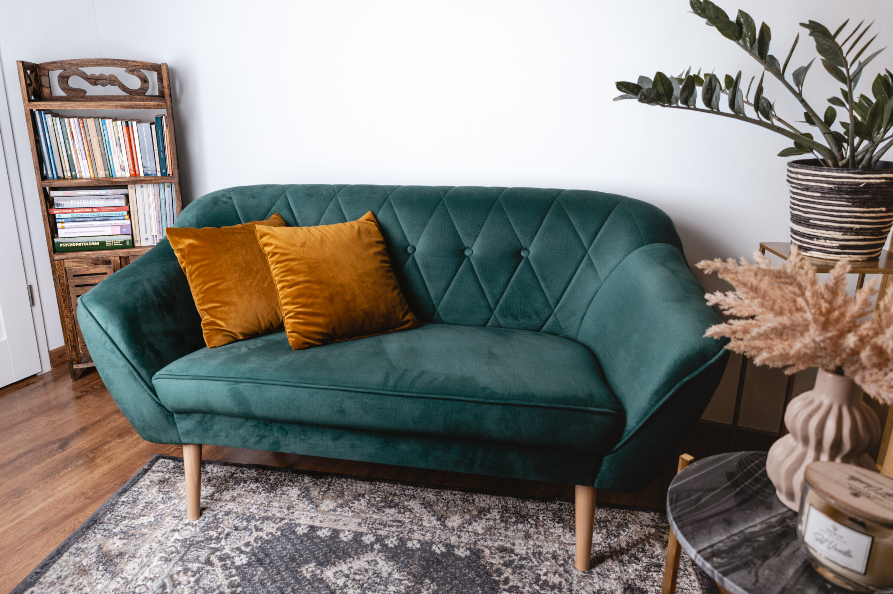

wykształcenie
2022 r. – Dyplomowany psychoterapeuta w procesie certyfikacji, nurt integracyjny, IPZ, Profesjonalna Szkoła Psychoterapii – Warszawa
2017 r. – Specjalista Psychoterapii Uzależnień, IPZ, Certyfikat PARPA nr 1985
2016 r. – magister Psychologii – Uniwersytet Warszawski
Szkolenia dodatkowe:
Certyfikowane szkolenie do pracy z osobami chorymi psychicznie w środowisku
Certyfikowane szkolenia profilaktyki i terapii uzależnień behawioralnych
Certyfikowane Szkolenie Krótkoterminowa Terapia Par
Gabinet prywatny Karol Paryszuk
ul. Juliusza Słowackiego 4, 18-400 Łomża
